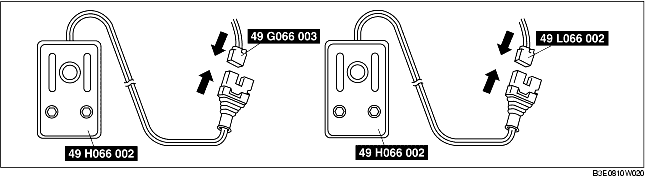

• If the vehicle is to be scrapped, or when disposing of any air bag modules or pre-tensioner front buckles, operate (deploy) them inside the vehicle by following the deployment procedure below and using the SST (Deployment tool).
• When disposing of a operated (deployed) air bag module and pre-tensioner front buckle, refer to "AIR BAG MODULE AND PRE-TENSIONER FRONT BUCKLE DISPOSAL PROCEDURES".
1. Inspect the SST (Deployment tool). (See INSPECTION OF SST (DEPLOYMENT TOOL).)
2. Move the vehicle to an open space, away from strong winds, and close all of the vehicle doors and windows.
3. Turn the ignition switch to the LOCK position.
4. Disconnect the negative battery cable and wait for 1 min or more.
5. Follow the procedure below for operating (deploying) the applicable air bag module or pre-tensioner front buckle.
1. Remove the driver-side air bag module.
(See DRIVER-SIDE AIR BAG MODULE REMOVAL/INSTALLATION.)
2. Connect the SSTs (Adapter harness) to the driver-side air bag module as shown in the figure.
3. Install the driver-side air bag module. (See DRIVER-SIDE AIR BAG MODULE REMOVAL/INSTALLATION.)
4. Connect the SSTs (Deployment tool) to the SSTs (Adapter harness).

5. Connect both SSTs (Deployment tool) to the battery. Connect the power supply red clip to the positive battery terminal, and the black clip to the negative battery terminal.
6. Verify that the red lamp on both SSTs (Deployment tool) is illuminated.
7. Verify that all persons are standing at least 6 m {20 ft} away from the vehicle.
8. Press the activation switch on the SST (Deployment tool) connected with 49 L066 002 (a yellow connector) of the SST (Adapter harness), and after 3 s, press the activation switch on the other SST (Deployment tool) to operate (deploy) the air bag module (both inflators).
9. Disconnect the SSTs (Deployment tool) from the SSTs (Adapter harness).
1. Remove the glove compartment. (See GLOVE COMPARTMENT REMOVAL/INSTALLATION.)
2. Disconnect the passenger-side air bag module connector.
3. Connect the SSTs (Adapter harness) to the passenger-side air bag module as shown in the figure.
4. Connect the SSTs (Deployment tool) to the SSTs (Adapter harness).

5. Connect both SSTs (Deployment tool) to the battery. Connect the power supply red clip to the positive battery terminal, and the black clip to the negative battery terminal.
6. Verify that the red lamp on both SSTs (Deployment tool) is illuminated.
7. Verify that all persons are standing at least 6 m {20 ft} away from the vehicle.
8. Press the activation switch on the SST (Deployment tool) connected with 49 L066 002 (a yellow connector) of the SST (Adapter harness), and after 3 s, press the activation switch on the other SST (Deployment tool) to operate (deploy) the air bag module (both inflators).
9. Disconnect the SSTs (Deployment tool) from the SSTs (Adapter harness).
1. Disconnect the front seat connector.
2. Connect the SST (Adapter harness) to the side air bag module and pre-tensioner front buckle as shown in the figure.
3. Connect the SST (Deployment tool) to the SST (Adapter harness).
4. Connect the SST (Deployment tool) to the battery. Connect the power supply red clip to the positive battery terminal, and the black clip to the negative battery terminal.
5. Verify that the red lamp on the SST (Deployment tool) is illuminated.
6. Verify that all persons are standing at least 6 m {20 ft} away from the vehicle.
7. Press the activation switch on the SST (Deployment tool) to operate (deploy) the side air bag module and pre-tensioner front buckle.
1. Remove the C-pillar trim. (4SD)
(See C-PILLAR TRIM REMOVAL/INSTALLATION.)
2. Partially peel back the headliner. (5HB)
3. Disconnect the curtain air bag module connector.
4. Connect the SST (Adapter harness) to the curtain air bag module as shown in the figure.
5. Connect the SST (Deployment tool) to the SST (Adapter harness).
6. Connect the SST (Deployment tool) to the battery. Connect the power supply red clip to the positive battery terminal, and the black clip to the negative battery terminal.
7. Verify that the red lamp on the SST (Deployment tool) is illuminated.
8. Verify that all persons are standing at least 6 m {20 ft} away from the vehicle.
9. Press the activation switch on the SST (Deployment tool) to operate (deploy) the curtain air bag module.
1. Inspect the SST (Deployment tool).
(See INSPECTION OF SST (DEPLOYMENT TOOL).)
2. Turn the ignition switch to the LOCK position.
3. Disconnect the negative battery cable and wait for 1 min or more.
4. Follow the procedure below for operating (deploying) the applicable air bag module or pre-tensioner front buckle.
1. Remove the driver-side air bag module.
(See DRIVER-SIDE AIR BAG MODULE REMOVAL/INSTALLATION.)
2. Connect the SSTs (Adapter harness) to the driver-side air bag module as shown in the figure.
3. Place the driver-side air bag module on the center of the tire wheel with the padded surface facing up. To secure the air bag module to the tire wheel, wrap a wire (cross section 1.25 mm2 {0.002 in2} or more) through the wheel and the bolt installation holes of the air bag module at least 4 times.
4. Stack three tires without wheels on top of the tire with the driver-side air bag module, and then stack another tire with a wheel on the very top.
5. Secure the tires with wire.
6. Connect the SSTs (Deployment tool) to the SSTs (Adapter harness).
7. Connect both SSTs (Deployment tool) to the battery. Connect the power supply red clip to the positive battery terminal, and the black clip to the negative battery terminal.
8. Verify that the red lamp on both SSTs (Deployment tool) is illuminated.
9. Verify that all persons are standing at least 6 m {20 ft} away from the vehicle.
10. Press the activation switch on the SST (Deployment tool) connected with 49 L066 002 (a yellow connector) of the SST (Adapter harness), and after 3 s, press the activation switch on the other SST (Deployment tool) to operate (deploy) the air bag module (both inflators).
11. Disconnect the SSTs (Deployment tool) from the SSTs (Adapter harness).
1. Remove the passenger-side air bag module.
(See PASSENGER-SIDE AIR BAG MODULE REMOVAL/INSTALLATION.)
2. Connect the SSTs (Adapter harness) to the passenger-side air bag module as shown in the figure.
3. Place the padded surface of the passenger-side air bag module facing the center of the tire as shown in the figure. To secure the air bag module to the tire wheel, wrap a wire (cross section 1.25 mm2 {0.002 in2} or more) through the tire and the bolt installation holes at least 4 times as shown in the figure.
4. Stack the tire with the passenger-side air bag module on top of two tires without wheels. Stack a tire without a wheel on top of the tire with the passenger-side air bag module, and then stack another tire with a wheel on the very top.
5. Secure the tires with wire.
6. Connect the SSTs (Deployment tool) to the SSTs (Adapter harness).
7. Connect both SSTs (Deployment tool) to the battery. Connect the power supply red clip to the positive battery terminal, and the black clip to the negative battery terminal.
8. Verify that the red lamp on both SSTs (Deployment tool) is illuminated.
9. Verify that all persons are standing at least 6 m {20 ft} away from the vehicle.
10. Press the activation switch on the SST (Deployment tool) connected with 49 L066 002 (a yellow connector) of the SST (Adapter harness), and after 3 s, press the activation switch on the other SST (Deployment tool) to operate (deploy) the air bag module (both inflators).
11. Disconnect the SSTs (Deployment tool) from the SSTs (Adapter harness).
1. Remove the side air bag module.
(See SIDE AIR BAG MODULE REMOVAL/INSTALLATION.)
2. Install the nuts to the side air bag module.
3. Place the padded surface of the side air bag module facing the center of the tire as shown in the figure. To secure the air bag module to the tire wheel, wrap a wire (cross section 1.25 mm2 {0.002 in2} or more) through the tire and around the bolts at least 4 times.
4. Connect the SST (Adapter harness) to the side air bag module as shown in the figure.
5. Stack the tire with the side air bag module on top of two tires without wheels. Stack a tire without a wheel on top of the tire with the side air bag module, and then stack another tire with a wheel on the very top.
6. Secure the tires with wire.
7. Connect the SST (Deployment tool) to the SST (Adapter harness).
8. Connect the SST (Deployment tool) to the battery. Connect the power supply red clip to the positive battery terminal, and the black clip to the negative battery terminal.
9. Verify that the red lamp on the SST (Deployment tool) is illuminated.
10. Verify that all persons are standing at least 6 m {20 ft} away from the vehicle.
11. Press the activation switch on the SST (Deployment tool) to operate (deploy) the side air bag module.
1. Remove the curtain air bag module.
(See CURTAIN AIR BAG MODULE REMOVAL/INSTALLATION.)
2. Secure the curtain air bag module in a vise, and cut off the deployment section, as shown in the figure.
3. Connect the SST (Adapter harness) to the curtain air bag module as shown in the figure.
4. Secure the curtain air bag module to the tire, by wrapping a wire (cross section 1.25 mm2 {0.002 in2} or more) through the tire and the bolt installation holes at least 4 times as shown in the figure.
5. Stack the tire with the curtain air bag module on top of two tires without wheels. Stack a tire without a wheel on top of the tire with the curtain air bag module, and then stack another tire with a wheel on the very top.
6. Secure the tires with wire.
7. Connect the SST (Deployment tool) to the SST (Adapter harness).
8. Connect the SST (Deployment tool) to the battery. Connect the power supply red clip to the positive battery terminal, and the black clip to the negative battery terminal.
9. Verify that the red lamp on the SST (Deployment tool) is illuminated.
10. Verify that all persons are standing at least 6 m {20 ft} away from the vehicle.
11. Press the activation switch on the SST (Deployment tool) to operate (deploy) the curtain air bag module.
1. Remove the pre-tensioner front buckle.
(See FRONT SEAT BELT REMOVAL/INSTALLATION.)
2. Place the pre-tensioner front buckle on the center of the tire wheel. To secure the buckle to the tire wheel, wrap a wire (cross section of 1.25mm2 {0.002in2} or more) through the wheel and the bolt installation hole and through the wheel and the tube, at least 4 times.
3. Connect the SST (Adapter harness) to the pre-tensioner front buckle as shown in the figure.
4. Stack three tires without wheels on top of the tire with the pre-tensioner front buckle, and then stack another tire with a wheel on the very top.
5. Secure the tires with wire.
6. Connect the SST (Deployment tool) to the SST (Adapter harness).
7. Connect the SST (Deployment tool) to the battery. Connect the power supply red clip to the positive battery terminal, and the black clip to the negative battery terminal.
8. Verify that the red lamp on the SST (Deployment tool) is illuminated.
9. Verify that all persons are standing at least 6 m {20 ft} away from the vehicle.
10. Press the activation switch on the SST (Deployment tool) to operate (deploy) the pre-tensioner front buckle.